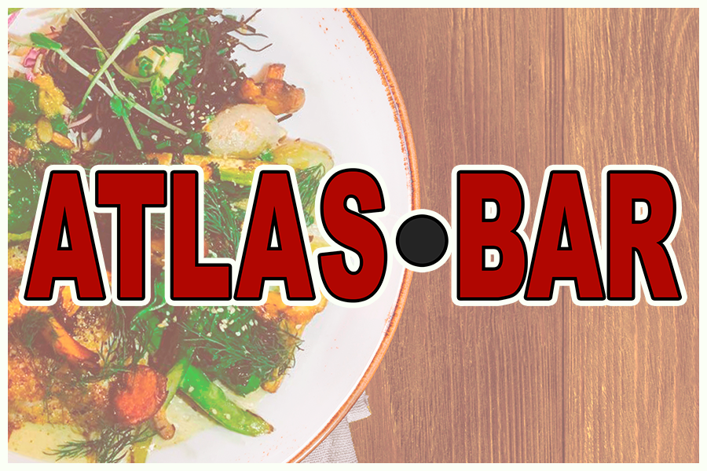
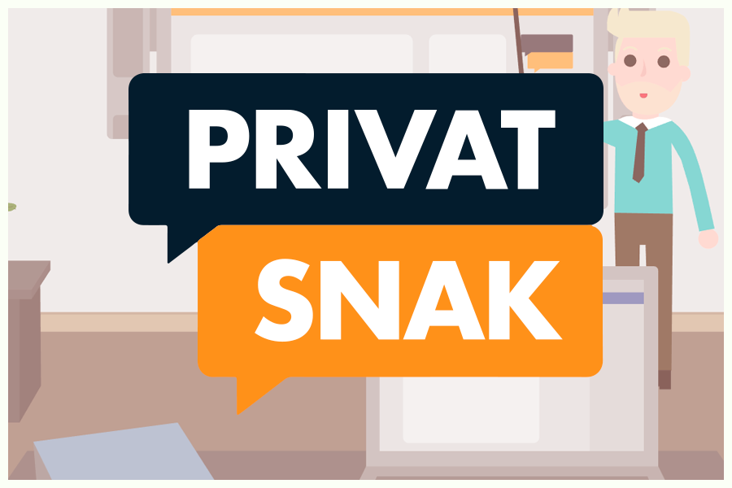
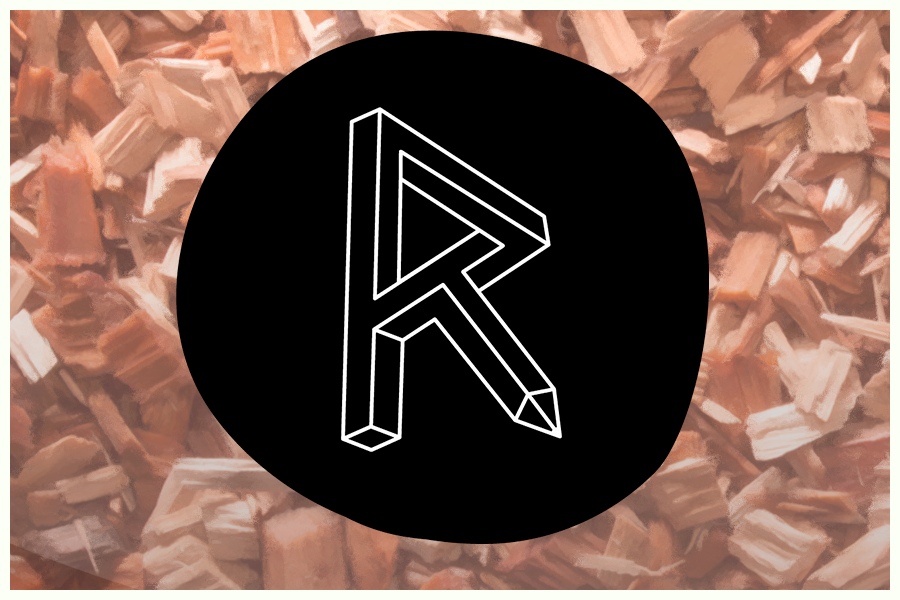

Cases







Opgaven: Opgaven bestod af at lave en hjemmeside, der skabte et overblik over en stilart. Formålet med opgaven var at lære os om basic HTML og CSS, samt hvordan flexbox fungerer. Derudover skulle hjemmeside formuleres så den var passende for en demografi 13 år.
Løsning: I min udførelselse af opgaven skulle jeg lave en hjemmeside om Popkunst, hvor jeg ladge vægt på stilartens udtryk i mit hjemmesidedesign, samt at det indhold hjemmesiden indeholdte var passende til stilarten. Derudover prøvede jeg også at lægge vægt på min målgruppe gennem den tekst der blev formuleret til hjemmesiden ved at benytte mig af kort og præcis tekst, der gav læseren relevante informationer der var forståelige for målgruppen.
Opgaven: Denne opgave bestod af at kontakte en potentiel kunde, der ville være interesseret i at få lavet en ny hjemmeside. Derudover skulle der laves en virksomhedsvideo, der viste virksomhedens faciliteter frem. Til dette kontaktede min gruppe Atlas Bar.
Løsning: Kunden vill gerne have en hjemmeside der bedre reflekterede stedet, og vi fandt efter megen analyse frem til en række faktorer der kunne forbedres. Til dette benyttede vi os af vores allerede tilegnede forståelser for hjemmeside design og webdevelopment fra tidligere forløb. Efter vi havde været på lokation, valgte vi at udvikle hjemmesidens design udfra den udsmykning som baren selv benyttede sig af.

Opgaven: Opgaven for dette var at skabe et visuelt produkt for CPH:dox, der omhandlede en række forudbestemte temaer for det visuelle produkt vi skulle skabe, hvoraf temaerne man kunne vælge at udarbejde var "Selvoptaget" eller "borger i et demokratisk samfund."
Løsning: I min gruppe valgte vi at arbejde med "selvoptaget". Her tog vi kontakt til en interviewperson, Ida-Marie, og lave et 3 minutters interview om hvordan det er at være en gennemsnittelig person der bruger snapchat og hvordan man fremstiller sig selv på nettet. Her benyttede vi os af et langt intervewklip, hvoraf vi indsatte enkelte B-rolls til at skabe den stemning vi gerne ville fremvise.
Opgaven:Opgaven var at skabe en interaktiv historie ved brug af HTML, CSS og JavaScript.
Løsning: I min løsning valgte jeg at tage den klassiske idé om ridderen der redder prinsessen og lave en historie ud af det koncept. Heraf skulle der laves 2 slutninger - Jeg valgte at de skulle handle om det at "Springe over hvor gærdet er lavest", og lavede derfor en narrativ om det at det ikke altis er den bedste idé bare at storme slottet.
Klik her for at at se den færdige animation
Klik her for at læse om Idé, stil og struktur
Opgaven: Opgaven var at skabe en interaktiv historie ved brug af HTML, CSS og Javascript. Dette var i samarbejde med Sex og Samfund, og skulle omhandle temaet om "Ulovlig deling af nøgenbilleder på internettet."
Løsning: I min gruppes løsning af casen valgte vi at gå ud fra et koncept: "Det tager kun et klik".
Dette var med til at skabe både det narrativ vi arbejdede ud fra, men var også med til at skabe den vej vi valgte at gå stilmæssigt. Her benyttede vi os af færdigheder vi havde lært individuelt fra forrige case til at skabe et acceptabelt produkt.


Opgaven: Opgaven bestod af at skabe en prototype app for KEA der løste et problem som insitutionen havde, samt at gennemgå den kreative process man benytter sig af når man skaber et kreativt produkt.
Løsning: I vores løsning af casen valgte vi at tage udgangspunkt i en app, der kunne benyttes af alle fredagsbarer på KEAs faciliteter. Vi kom frem til denne løsning gennem nogen runde idégenerering baseret på en række af de problemer KEAs egne elever mente var værd at tage fat i. Derefter skabte vi en række Lo-Fi prototyper, hvoraf vi endte med at skabe vores fredagsbarsapp udfra. Til dette benyttede vi os af Adobe XD til at skabe vores prototype.
Opgaven: Opgaven bestod af at skabe en prototype app for kontorhuset Republikken, der løste et problem som insitutionen havde. Heraf blev vi stillet følgende problemstilling: "Hvordan kan Republikken styrke interaktionen mellem medlemmerne gennem en ny app?"
Løsning: Vi startede med en omhyggelig idégenerering udfra den brugerundersøgelse af Republikkens medlemmer. Denne blev brugt til at pin pointe nogen af de problemer Republikkens egne medlemmer mente kunne forbedres. Heraf var der mange der skrev om at det ville være fedt hvis man kunne samle mange af de sociale aspekter på Republikken ét sted. Vi brugte denne viden til at lave en idégenerering, der endte ud i vores koncept, "Workspace": En app man kunne bruge tiil at bede om hjælp på tværs af brancherne, samt en eventkalender der kunne give Republikkens medlemmer et bedre overblik.